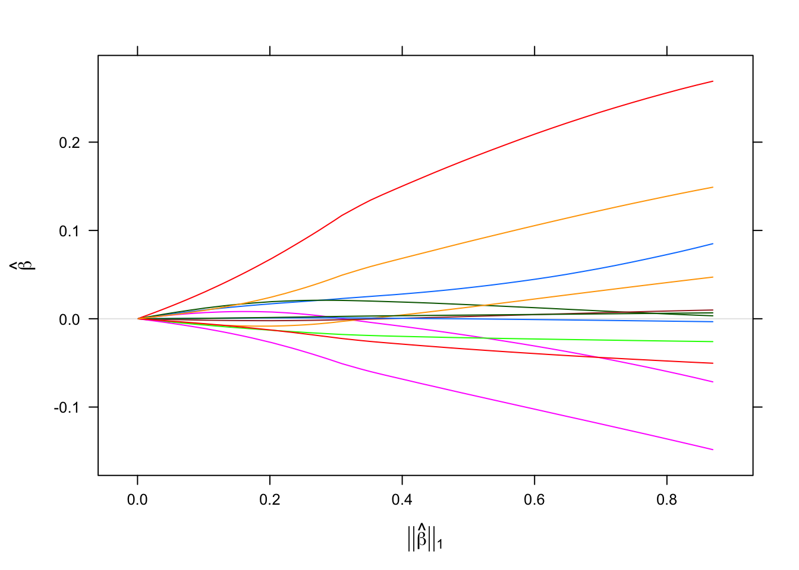
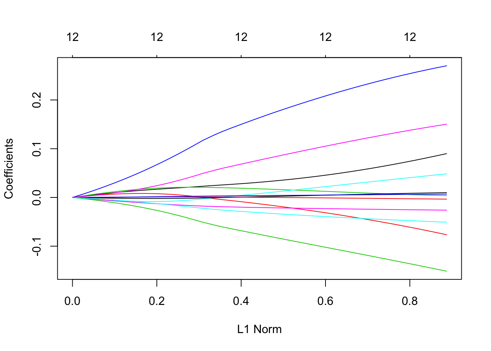
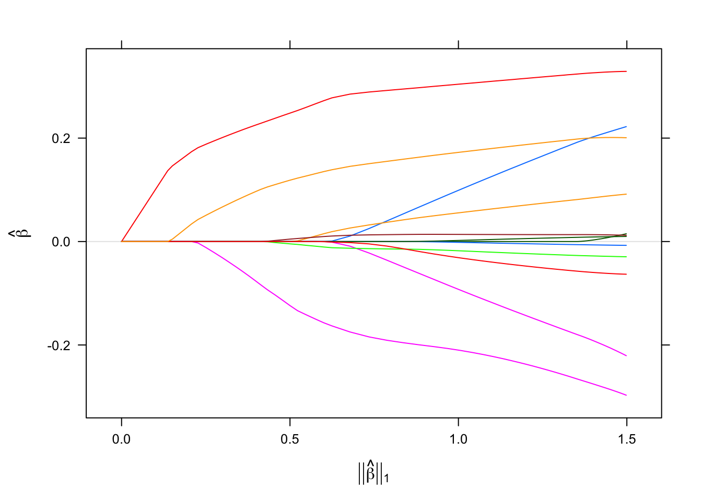
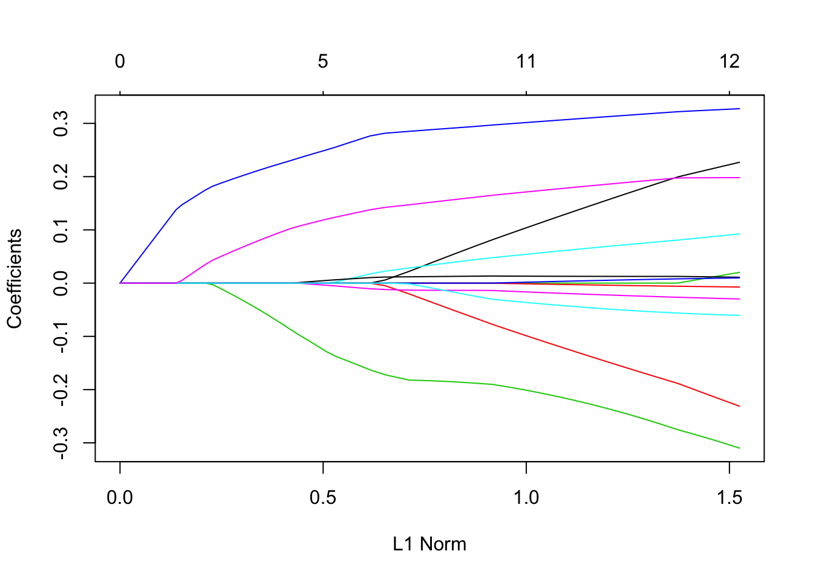

5 Poisson Models
5.1 Overview
Poisson regression via sgdnet() is now supported by sgdnet, which has the following objective function in elastic net regularization:
We use the deviance function for a Poisson distribution \(y_i \sim Pois(\mu_i)\) to evaluate model loss:
\[ 2 \sum_{i=1}^n \Big [ y_i log \, (\frac{y_i}{\mu_i}) - (y_i - \mu_i) \Big ] \] where \(\mu_i = e^{\beta_0 + \beta^\mathsf{T} x_i}\).
The Poisson loss function is convex but not Lipschitz-continuous. To guarantee SAGA’s convergence, which rely on derivatives’ Lipschitz-continuity, we will update the approximated Lipschitz constant \(L\) while running the algorithm. Starting with an initial estimate \(L^{0}\) as \(L_{\text{max}}\), which is the largest sample-wise squared norm of the feature matrix, an invalid \(L^{k}\) will be doubled after evaluating \(f_i\) with the coefficient \(\beta_{k}\) at iteration \(k\), if the following inequality is not satisfied (Schmidt, Le Roux, and Bach 2017):
\[ f_{i_{k}} \Big ( (\beta_{0k} + \beta_{k}^\mathsf{T} x_i) - \frac{f^{'}_{i_{k}}(\beta_{0k},\beta_{k})}{L^{k}} \left \| x_i \right \|^2_{2} \Big ) \leq f_{i_{k}} (\beta_{0k} + \beta_{k}^\mathsf{T} x_i) - \frac{1}{2L^{k}} \left \| f^{'}_{i_{k}}(\beta_{0k}, \beta_{k}) \right \|^2_2 \left \| x_i \right \|^2_{2} \]
where the individual norm is precomputed. The corresponding cross-validation method via cv_sgdnet(), as well as making prediction by predict() and model performance measure by score() are also avilable for Poisson in sgdnet.
5.2 Example
For illustration, we compare with glmnet using the fitting results of caddisfly dataset along regularization path. This dataset describes the abundances of one of 17 species in original dataset, which is Stactobiella risi, and 12 meteorological features that may influence its presence during 49 trapping night.
data("caddisfly")
x <- caddisfly$x
y <- caddisfly$y
sfit0 <- sgdnet(x, y, family = "poisson", alpha = 0)
gfit0 <- glmnet(x, y, family = "poisson", alpha = 0)
sfit1 <- sgdnet(x, y, family = "poisson", alpha = 1)
gfit1 <- glmnet(x, y, family = "poisson", alpha = 1)
Reference
Schmidt, Mark, Nicolas Le Roux, and Francis Bach. 2017. “Minimizing Finite Sums with the Stochastic Average Gradient.” Mathematical Programming 162 (1-2): 83–112.